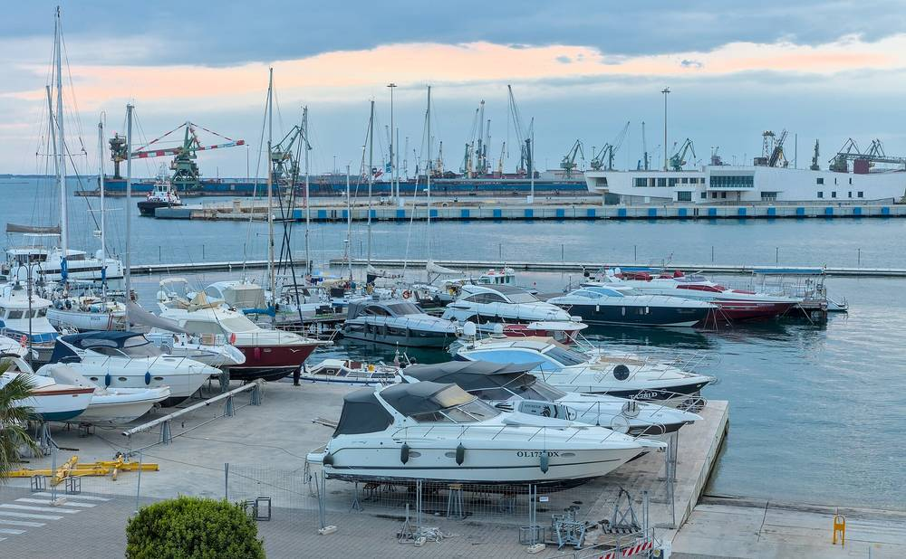

이탈리아 타란토항, 항만청 주도로 '항만 재생에너지 공동체' NET 설립…기업·단체 12곳 참여, 취약 지역 세 동네 가족도 가입 예정

이오니아해 항만시스템청, 국가 에너지서비스공사(GSE) 도움 받아 출범…에너지 빈곤 줄이기를 목표에 넣고 다른 항만에 옮겨 쓸 모델로 내세워
이탈리아 남부 풀리아주 타란토항에 항만 기업과 단체, 항만 주변 주민이 함께하는 재생에너지 공동체 'NET(New Energy Taranto)'가 11월 2일 공식 설립됐다. 항만을 관리하는 이오니아해 항만시스템청(AdSP)이 주도한 이 공동체에는 항만 안에서 일하는 기업과 항만청 네트워크에 속한 환경·지역 단체 등 12곳이 먼저 이름을 올렸고, 항만과 도심이 맞닿은 취약 지역인 타무리·치타 베키아(옛 도심)·포르타 나폴리 세 동네의 일부 가족도 며칠 안에 정식으로 가입할 예정이다. NET는 재생에너지의 분산 생산과 공유·저장, 공동 자가소비, 에너지 효율 개선과 함께 에너지 빈곤 줄이기를 목표로 내걸었고, 앞으로도 이 지역의 기업·단체·가족에게 문을 열어 두기로 했다. 항만청은 2025년 이탈리아 항만청 가운데 처음으로 국가 에너지서비스공사(GSE)와 에너지 전환 지원 협약을 맺었으며, 정부 인프라교통부가 올해 지침으로 전국 항만청장들에게 항만 안 재생에너지 공동체 설립을 과제로 준 가운데 NET가 이탈리아 첫 항만 재생에너지 공동체이자 다른 항만에 옮겨 쓸 모델이 될 것이라고 밝혔다. 조반니 구리오티 항만청장은 미리 폭넓은 합의를 거친 방식과 항만·지역 공동체가 함께 노릴 목표를 정했다는 점을 들어 이번 설립을 "항만 역사의 전환점"이라고 평가했고, GSE는 운영 단계에서도 지원을 이어 간다. 발전 설비의 용량과 설치 장소, 참여 가족 수는 아직 알려지지 않았다.
시민에너지 관점
이탈리아 나폴리 동부의 가난한 동네 산조반니 아 테두초에서는 지역 재단 건물 지붕의 태양광 전기를 형편이 어려운 가족들이 함께 나눠 쓰는 '연대형' 재생에너지 공동체가 꾸려져, 에너지 공동체가 곧 에너지 빈곤 대책이 될 수 있음을 보여 줬다. 항만청과 항만 기업이 판을 짜면 동네 가족은 이름만 올리는 들러리가 되지 않겠느냐는 우려가 있지만, 가족이 기업과 같은 조합원으로 의결권을 갖고 공유 전기의 몫을 우선 받도록 규약에 못 박으면 공공기관이 깐 판이 오히려 주민의 발판이 된다. 공장과 항만 곁에서 오염과 높은 에너지비를 함께 떠안아 온 동네가 그 땅에서 나는 재생에너지의 주인이 되는 것이야말로 정의로운 전환이다. 우리 항만공사와 산업단지 관리기관도 자기 부지와 입주 기업을 묶어 주변 취약 지역 주민이 처음부터 주인으로 참여하는 에너지 공동체를 설계할 때다.
출처: MeteoWeb 2026-11-02 Stefano Vitetta 원문 보기
출처: Shipping Italy 2026-11-02 Redazione Shipping Italy 원문 보기
イタリア・ターラント港、港湾当局主導で「港湾再生可能エネルギーコミュニティー」NETを設立…企業・団体12者が参加、脆弱地域3地区の家族も加入予定
イオニア海港湾システム庁、国のエネルギーサービス公社（GSE）の支援を受けて発足…エネルギー貧困の緩和を目標に掲げ、他の港に移せるモデルを打ち出す
イタリア南部プーリア州のターラント港で、港湾企業や団体、港周辺の住民が共に参加する再生可能エネルギーコミュニティー「NET（New Energy Taranto）」が11月2日、正式に設立された。港を管理するイオニア海港湾システム庁（AdSP）が主導したこのコミュニティーには、港内で事業を営む企業と同庁のネットワークに属する環境・地域団体など12者がまず名を連ね、港と市街地が接する脆弱地域であるタンブーリ、チッタ・ヴェッキア（旧市街）、ポルタ・ナポリの3地区の一部の家族も数日内に正式加入する予定だ。NETは再生可能エネルギーの分散型生産と共有・蓄電、共同自家消費、エネルギー効率の改善に加え、エネルギー貧困の緩和を目標に掲げ、今後もこの地域の企業・団体・家族に門戸を開いておくとした。同庁は2025年、イタリアの港湾当局として初めて国のエネルギーサービス公社（GSE）とエネルギー転換支援の協定を結んでおり、インフラ交通省が今年の指針で全国の港湾当局トップに港内の再エネコミュニティー設立を課題として課すなか、NETはイタリア初の港湾再エネコミュニティーであり、他の港にも移せるモデルになると説明した。ジョヴァンニ・グリオッティ長官は、事前に幅広い合意を得た手法と、港と地域社会が共に目指す目標を定めた点を挙げ、今回の設立を「港の歴史の転換点」と評価し、GSEは運営段階でも支援を続ける。発電設備の容量や設置場所、参加する家族の数はまだ明らかになっていない。
市民エネルギーの視点
イタリア・ナポリ東部の貧しい地区サン・ジョヴァンニ・ア・テドゥッチョでは、地元財団の建物の屋根で発電した太陽光の電気を、暮らしの苦しい家族が分け合う「連帯型」再エネコミュニティーがつくられ、エネルギーコミュニティーがそのままエネルギー貧困対策になりうることを示した。港湾当局や港湾企業が枠組みを作れば、地域の家族は名前を連ねるだけの脇役になるのではとの懸念もあるが、家族が企業と同じ組合員として議決権を持ち、共有電力の取り分を優先して受け取れるよう規約に明記すれば、公的機関が整えた枠組みはむしろ住民の足場になる。工場や港のそばで汚染と高いエネルギー費を背負ってきた地区が、その土地で生まれる再生可能エネルギーの持ち主になることこそ公正な移行だ。韓国の港湾公社や産業団地の管理機関も、自らの用地と入居企業を束ね、周辺の脆弱地域の住民が最初から持ち主として参加するエネルギーコミュニティーを設計すべき時だ。
出典: MeteoWeb 2026-11-02 Stefano Vitetta 原文を読む
出典: Shipping Italy 2026-11-02 Shipping Italy編集部 原文を読む
意大利塔兰托港在港务局主导下成立"港口可再生能源社区"NET…12家企业和团体加入，三个弱势街区的家庭也将入社
爱奥尼亚海港口系统管理局在国家能源服务公司（GSE）协助下启动…把减少能源贫困列为目标，并定位为可推广到其他港口的模式
意大利南部普利亚大区的塔兰托港11月2日正式成立了由港口企业、团体和港口周边居民共同参与的可再生能源社区"NET（New Energy Taranto）"。这个社区由管理港口的爱奥尼亚海港口系统管理局（AdSP）主导，港内经营的企业和该局网络内的环保、地方团体等12家先行加入，港口与市区相接的弱势地区——坦布里、老城区（Città Vecchia）、那不勒斯门（Porta Napoli）三个街区的部分家庭也将在几天内正式入社。NET把可再生能源的分布式生产、共享与储存、集体自用、提高能效以及减少能源贫困列为目标，并表示今后仍向该地区的企业、团体和家庭敞开大门。该局2025年在意大利各港务局中率先与国家能源服务公司（GSE）签署能源转型支持协议；在基础设施和交通部今年以指令要求全国港务局负责人在港区内设立可再生能源社区之际，该局表示NET是意大利首个港口可再生能源社区，也将成为可推广到其他港口的模式。局长乔瓦尼·古廖蒂以事先取得广泛共识的做法、以及确定港口与地方社区共同追求的目标为由，称此次成立是"港口历史的转折点"，GSE在运营阶段也将继续提供支持。发电设施的容量、安装地点和参与家庭数目前尚未公布。
市民能源视角
在意大利那不勒斯东部的贫困街区圣乔瓦尼阿泰杜乔，当地基金会建筑屋顶上的太阳能电力由生活困难的家庭共同分享，组成了"团结型"可再生能源社区，证明能源社区本身就可以成为应对能源贫困的办法。有人担心，由港务局和港口企业搭台，街区家庭只会沦为挂名的陪衬；但只要在章程中写明家庭与企业一样以社员身份拥有表决权、并优先获得共享电力的份额，公共机构搭起的平台反而会成为居民的立足点。长期在工厂和港口旁同时承受污染和高能源费用的街区，成为当地所产可再生能源的主人，这才是公正转型。韩国的港口公社和产业园区管理机构也应把自身用地和入驻企业组织起来，设计让周边弱势地区居民从一开始就作为主人参与的能源社区。
来源: MeteoWeb 2026-11-02 Stefano Vitetta 查看原文
来源: Shipping Italy 2026-11-02 Shipping Italy编辑部 查看原文
Italy's port of Taranto sets up the 'port renewable energy community' NET under its port authority, with 12 companies and associations on board and families from three vulnerable districts set to join
The Ionian Sea Port System Authority launched it with help from the state energy services operator GSE, lists cutting energy poverty among its goals and presents it as a model other ports can copy
A renewable energy community bringing together port businesses, associations and residents around the harbour, NET (New Energy Taranto), was formally established at the port of Taranto in Apulia, southern Italy, on November 2. Led by the Ionian Sea Port System Authority (AdSP), which runs the port, the community starts with 12 members, companies operating inside the port and environmental and local associations in the authority's network, and some families from Tamburi, Città Vecchia (the old town) and Porta Napoli, three vulnerable districts where the port meets the city, are due to join formally within days. NET's stated goals are distributed renewable generation, sharing and storage, collective self-consumption and better energy efficiency, along with reducing energy poverty, and it will stay open to further companies, associations and families from the area. In 2025 the authority became the first Italian port authority to sign an energy-transition support agreement with the state energy services operator GSE, and, with the Ministry of Infrastructure and Transport this year directing port authority heads nationwide to set up renewable energy communities in their ports, it says NET is Italy's first port renewable energy community and a model that other ports can replicate. Authority president Giovanni Gugliotti called the launch "a turning point in the history of the port", citing the method of building broad consensus in advance and the setting of shared goals for the port and the local community, and GSE will keep supporting the community once it is running. The capacity and location of its generating equipment and the number of participating families have not yet been disclosed.
Citizen Energy View
In San Giovanni a Teduccio, a poor district in eastern Naples, a "solidarity" renewable energy community was set up in which struggling families share the solar power from the roof of a local foundation's building, showing that an energy community can itself be a remedy for energy poverty. Some will worry that when a port authority and port businesses set the terms, local families end up as names on a list, but if the statutes guarantee families the same voting rights as companies and first claim on a share of the shared power, a framework laid down by a public body becomes a foothold for residents instead. A just transition means that neighbourhoods which have lived beside factories and docks, bearing both pollution and high energy bills, become owners of the renewable energy produced on that land. Korea's port authorities and industrial-complex managers should likewise pool their land and tenant companies and design energy communities in which residents of nearby vulnerable areas take part as owners from the very start.
Source: MeteoWeb 2026-11-02 Stefano Vitetta Read the original
Source: Shipping Italy 2026-11-02 Shipping Italy editorial staff Read the original